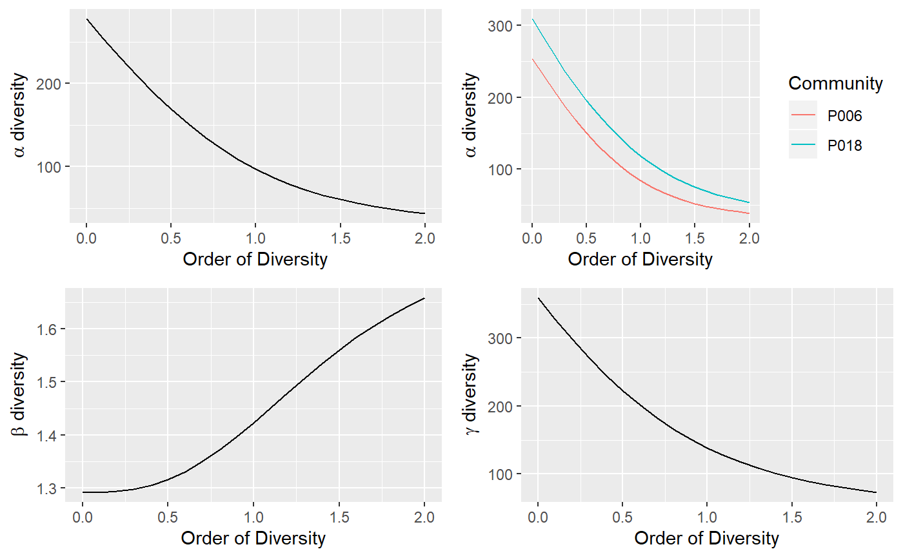

DivProfile.RdCalculate the diversity profiles (alpha, beta, gamma) of a metacommunity.
DivProfile(q.seq = seq(0, 2, 0.1), MC, Biased = TRUE, Correction = "Best", Tree = NULL, Normalize = TRUE, Z = NULL, NumberOfSimulations = 0, Alpha = 0.05, CheckArguments = TRUE) is.DivProfile(x) # S3 method for DivProfile plot(x, …, main = NULL, xlab = "Order of Diversity", ylab = NULL, Which = "All", LineWidth = 2, ShadeColor = "grey75", BorderColor = "red") # S3 method for DivProfile autoplot(object, …, main = NULL, xlab = "Order of Diversity", ylab = NULL, Which = "All", ShadeColor = "grey75", alpha = 0.3, BorderColor = "red", labels = NULL, font.label = list(size=11, face="plain")) # S3 method for DivProfile summary(object, …)
| q.seq | A numeric vector. |
|---|---|
| MC | A |
| Biased | Logical; if |
| Correction | A string containing one of the possible corrections. The correction must be accepted by |
| Tree | An object of class |
| Normalize | If |
| Z | A relatedness matrix, i.e. a square matrix whose terms are all positive, strictly positive on the diagonal. Generally, the matrix is a similarity matrix, i.e. the diagonal terms equal 1 and other terms are between 0 and 1. |
| NumberOfSimulations | The number of simulations to run, 0 by default. |
| Alpha | The risk level, 5% by default. |
| CheckArguments | Logical; if |
| x | An object to be tested or plotted. |
| main | The main title of the plot. Ignored if |
| xlab | The x axis label of the plots. |
| ylab | The y axis label of the plot. Ignored if |
| Which | May be |
| LineWidth | The width of the line that represents the actual profile. |
| ShadeColor | The color of the shaded confidence envelope. |
| BorderColor | The color of the bounds of the confidence envelope. |
| alpha | Opacity of the confidence enveloppe, between 0 and 1. |
| labels | Vector of labels to be added to multiple plots. |
| font.label | A list of arguments to customize labels. See |
| object | A |
| … | Additional arguments to be passed to the generic methods. |
If Tree is provided, the phylogenetic diversity is calculated.
DivPart partitions the diversity of the metacommunity into alpha and beta components. It supports estimation-bias correction.
If Tree is provided, the phylogenetic diversity is calculated else if Z is not NULL, then similarity-based entropy is calculated.
Beta diversity/entropy is calculated from Gamma and Alpha when bias correction is required, so community values are not available.
If NumberOfSimulations is greater than 0, a bootstrap confidence interval is produced by simulating communities from a multinomial distribution following the observed frequencies (Marcon et al, 2012; 2014) and calculating their profiles.
A DivProfile object. It is a list:
The name of the MetaCommunity object containing inventory data.
A vector containing the values of q.
Logical. If FALSE, bias corrected values of diversity have been computed.
The estimation bias correction used to calculate diversity. Usually a string, but it may be a list if different corrections have been used in the estimation of phylodiversity.
The method used to calculate entropy ("HCDT", "Similarity-based").
The phylogenetic or functional tree used to calculate phylodiversity.
Logical. Indicates whether phylodiversity is normalized or proportional to the height of the tree.
The matrix used to calculate similarity-based entropy.
A matrix containing the alpha diversity of each community.
A vector containing the alpha diversity of communities for each order.
A vector containing the beta diversity of communities for each order.
A vector containing the gamma diversity of the metacommunity for each order.
A matrix containing the alpha entropy of each community.
A vector containing the alpha entropy of communities for each order.
A vector containing the beta entropy of communities for each order.
A vector containing the gamma entropy of the metacommunity for each order.
Total Alpha, Beta and Gamma Entropy and Diversity may come with a confidence envelope whose value is stored in twelve more vectors named suffixed Low or High, such as GammaEntropyLow
Marcon, E., Herault, B., Baraloto, C. and Lang, G. (2012). The Decomposition of Shannon's Entropy and a Confidence Interval for Beta Diversity. Oikos 121(4): 516-522.
Marcon, E., Scotti, I., Herault, B., Rossi, V. and Lang, G. (2014). Generalization of the partitioning of Shannon diversity. PLOS One 9(3): e90289.
Marcon, E., Herault, B. (2015). Decomposing Phylodiversity. Methods in Ecology and Evolution 6(3): 333-339.
# Load Paracou data (number of trees per species in two 1-ha plot of a tropical forest) data(Paracou618) # Estimate diversity. Profile <- DivProfile(q.seq = seq(0, 2, 0.1), Paracou618.MC, Biased = FALSE) plot(Profile)autoplot(Profile)summary(Profile)#> Diversity profile of MetaCommunity Paracou618.MC #> with correction: UnveilJ #> Diversity against its order: #> Order Alpha Diversity Beta Diversity Gamma Diversity #> UnveilJ 0.0 277.53648 1.293524 359.00000 #> UnveilJ 0.1 254.47730 1.290819 328.48413 #> UnveilJ 0.2 232.16042 1.290650 299.63787 #> UnveilJ 0.3 210.73204 1.293490 272.57969 #> UnveilJ 0.4 190.35593 1.299783 247.42149 #> UnveilJ 0.5 171.20164 1.309892 224.25559 #> UnveilJ 0.6 153.42839 1.324017 203.14186 #> UnveilJ 0.7 137.16691 1.342141 184.09739 #> UnveilJ 0.8 122.50295 1.363976 167.09113 #> UnveilJ 0.9 109.46617 1.388963 152.04448 #> UnveilJ 1.0 98.02742 1.416315 138.83774 #> UnveilJ 1.1 88.10457 1.445108 127.32060 #> UnveilJ 1.2 79.57516 1.474386 117.32449 #> UnveilJ 1.3 72.29195 1.503273 108.67455 #> UnveilJ 1.4 66.09814 1.531048 101.19945 #> UnveilJ 1.5 60.83964 1.557184 94.73849 #> UnveilJ 1.6 56.37334 1.581349 89.14592 #> UnveilJ 1.7 52.57175 1.603387 84.29284 #> UnveilJ 1.8 49.32460 1.623276 80.06741 #> UnveilJ 1.9 46.53854 1.641090 76.37394 #> UnveilJ 2.0 44.13571 1.656966 73.13138